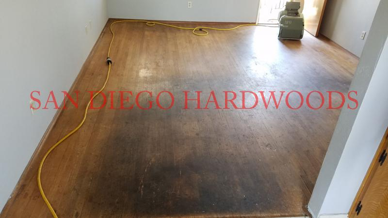
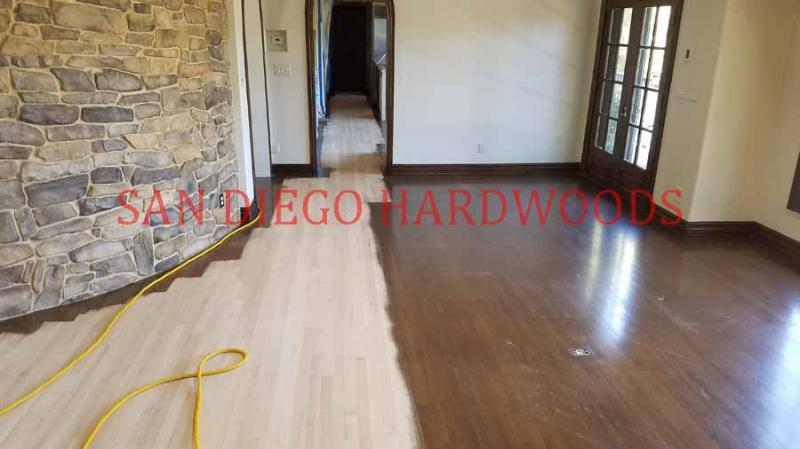
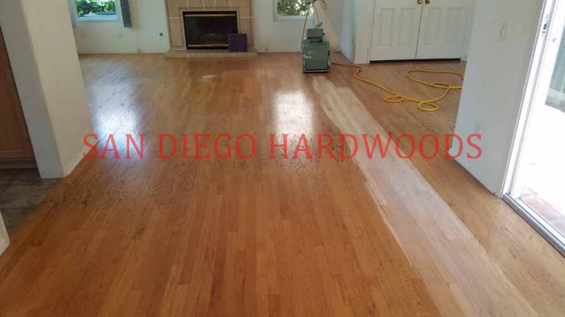

San Diego Hardwood Flooring Blog — Expert Advice on Refinishing, Restoration, Deep Cleaning, Repairs, Installation & Professional Floor Care
Licensed, Bonded & Insured Hardwood Flooring Specialist with 35+ Years of Experience in Refinishing, Restoration, Repairs, Custom Installation, Dust Containment Sanding, Deep Cleaning, Custom Staining, Wire-Brushed & Oil-Finished Floors. Call or Text 858-699-0072 to Discuss Your Project with an Experienced Flooring Specialist.
REFINISH RESTORE REPAIR WOOD HARDWOOD BAMBOO SOLID AND ENGINEERED WOOD FLOORING IN SAN DIEGO COUNTY. BONA CERTIFIED CRAFTSMAN
Professional Hardwood Floor Refinishing, Restoration & Floor Care in San Diego
Hardwood floors are one of the most valuable features in a home, but years of foot traffic, pets, sunlight, moisture, and everyday wear can leave them scratched, dull, stained, or faded. Professional hardwood floor refinishing, restoration, repairs, deep cleaning, and maintenance can dramatically restore their beauty, durability, and value while extending the life of your investment.
Why Homeowners Choose San Diego Hardwoods
For more than 35 years, San Diego Hardwoods has specialized exclusively in hardwood flooring. Every project is personally performed by an experienced flooring craftsman using premium equipment, proven techniques, and high-performance Bona finishing systems. We specialize in hardwood floor refinishing, restoration, repairs, custom installation, dust containment sanding, custom staining, deep cleaning, maintenance coats, wire-brushed hardwood floors, oil-finished floors, engineered hardwood, bamboo flooring, and premium floor care throughout San Diego County.
Modern Hardwood Floor Refinishing
Today's hardwood floor restoration goes far beyond traditional drum sanding. Modern sanding equipment produces flatter, more consistent results while significantly reducing airborne dust through advanced dust containment systems. Combined with premium Bona sealers and finishes, your hardwood floors receive exceptional durability, outstanding appearance, and low-VOC protection for your home.
Custom Stains & Specialty Hardwood Finishes
Whether you're restoring traditional oak floors or updating your home with contemporary finishes, we create custom stain colors and specialize in today's most sought-after looks, including natural finishes, matte finishes, satin finishes, wire-brushed hardwood, and oil-finished flooring. Every floor is customized to complement your home's style while preserving the natural beauty of the wood.
Not Every Hardwood Floor Needs Refinishing
Many hardwood floors can be dramatically improved without complete sanding. Professional deep cleaning with the Bona Power Scrubber, maintenance coats, and targeted repairs often restore clarity, improve appearance, and extend the life of your existing finish. We help homeowners determine whether deep cleaning, recoating, repairs, or complete refinishing is the most appropriate solution for their floors.
Professional Hardwood Flooring Consultations
Every hardwood floor is unique. Whether you're considering refinishing, repairs, deep cleaning, custom installation, restoration after water damage, or maintaining specialty finishes, we'll help you understand your options and recommend the solution that best fits your floors, your home, and your long-term goals.
Revitalize Your San Diego Hardwood Floors with Expert Refinishing & Installation
Hardwood floors are one of the most valuable upgrades you can make to a San Diego home. Over time, even premium hardwood flooring can develop scratches, dents, fading, water damage, worn finishes, or outdated colors such as the heavy red tones found in many Brazilian Cherry floors. Professional hardwood floor refinishing, restoration, and installation can completely transform your home while preserving the beauty and character of real wood.
For more than 35 years, San Diego Hardwoods has specialized in hardwood floor refinishing, dustless sanding, repairs, custom staining, bleaching, deep cleaning, recoating, and complete hardwood floor installation throughout San Diego County. Whether you are searching for hardwood floor refinishing, a professional wood floor installer, or expert hardwood floor restoration, our goal is simple—deliver exceptional craftsmanship that lasts for decades.
Why Homeowners Choose San Diego Hardwoods
- Advanced Dustless Sanding Equipment – Modern rotary sanding systems produce flatter, smoother floors while dramatically reducing airborne dust compared to traditional drum sanders.
- Expert Color Matching & Bleaching – We create custom colors ranging from natural finishes and modern white-washed hardwood to bleaching Brazilian Cherry and restoring historic hardwood floors.
- Premium Bona Water-Based Finishes – Bona Traffic HD provides exceptional durability, beautiful clarity, low VOC emissions, and GreenGuard certification for healthier indoor air quality.
- Over 35 Years of Experience – Every project is personally evaluated using decades of hardwood flooring knowledge to recommend the best long-term solution.
Our Hardwood Floor Refinishing & Installation Process
- Professional Evaluation – Every floor is inspected to determine the best restoration or installation approach.
- Dust Containment & Preparation – We carefully protect your home before any sanding begins.
- Precision Sanding – Modern rotary sanding equipment creates an exceptionally flat surface ready for finishing.
- Repairs & Restoration – Damaged boards, gaps, stains, and worn areas are professionally repaired whenever possible.
- Custom Staining or Bleaching – We match existing flooring or create completely new designer colors tailored to your home.
- Professional Installation – We install solid hardwood, engineered hardwood, bamboo flooring, nail-down flooring, glue-down flooring, and wide plank hardwood flooring.
- Premium Bona Protective Finish – Multiple coats provide exceptional durability and long-lasting beauty.
Benefits of Professional Hardwood Floor Refinishing
- Restore the natural beauty of existing hardwood floors.
- Increase the value and appeal of your home.
- Improve indoor air quality using low-VOC Bona finishes.
- Extend the life of your hardwood flooring for decades.
- Completely modernize outdated floor colors and worn finishes.
Serving Homeowners Throughout San Diego County
San Diego Hardwoods proudly serves homeowners throughout La Jolla, Del Mar, Rancho Santa Fe, Encinitas, Carmel Valley, Solana Beach, Coronado, Pacific Beach, Mission Hills, Point Loma, Carlsbad, Oceanside, Vista, Escondido, Poway, Rancho Bernardo, and communities across San Diego County with expert hardwood floor refinishing, installation, restoration, deep cleaning, and repairs.
Request Your Free Hardwood Flooring Consultation
Whether you need hardwood floor refinishing, complete installation, repairs, restoration, dustless sanding, or professional deep cleaning, San Diego Hardwoods is ready to help. Call or text photos of your floors for a fast professional evaluation and honest recommendations backed by more than 35 years of experience.
Could Deep Cleaning Save Your Hardwood Floors?
Not every hardwood floor needs refinishing. Many dull, dirty, lightly scratched, or worn floors can be dramatically improved with our Bona Power Scrubber deep cleaning system and a protective low-VOC maintenance coat. We also specialize in maintaining wire-brushed hardwood, matte finishes, satin finishes, natural oil finishes, engineered hardwood, and bamboo flooring throughout San Diego County.
Learn When Deep Cleaning Is a Better Choice Than Refinishing »

Hardwood Flooring Case Studies & Project Stories
Twelve real San Diego hardwood flooring projects — refinishing, restoration, repairs, and installation — told in the words of the crew who did the work.
# 1 Coronado Hardwood Floor Restoration / Refinishing
This Coronado hardwood floor refinishing project shows the full range of services San Diego Hardwoods offers: sanding with dust-free equipment, custom color staining, and sealing with durable water-based polyurethane. Homes in Coronado and across coastal San Diego often suffer from fading, scratches, and salt-air damage, and our refinishing process restores a smooth, elegant surface while protecting the wood for years to come. For homeowners searching for a wood floor installer in San Diego, we provide expert installation of solid hardwood, engineered flooring, and wide plank French oak. Many clients ask “who’s the best flooring company in San Diego” or “where can I find the best wood floor installer San Diego homeowners recommend,” and projects like this answer that question. Beyond refinishing, we handle repairs for water damage, termite damage, and pet wear, bleaching Brazilian cherry floors to remove excess red, and restoring vintage and historic hardwood floors. Whether you need us to install wood floors in San Diego, recoat an existing floor, or carry out complete hardwood floor restoration in Coronado, La Jolla, or Del Mar, San Diego Hardwoods delivers Bona-certified craftsmanship trusted across the region.

# 2 Rancho Santa Fe San Diego Hickory Hardwood Floor Refinishing, Installation, and Butcher Block Restoration
Expanded Snippet: In this Rancho Santa Fe estate, San Diego Hardwoods refinished and expanded a solid hickory hardwood floor system that had been neglected by a previous owner. Our team used dust-free sanding equipment with full dust containment, carefully prepared the home, and applied custom stain samples before finishing the floors with durable Bona water-based polyurethane. The project also included carpet removal and installation of new unfinished hickory, nailed to the plywood subfloor, effectively doubling the square footage of hardwood flooring. A unique highlight was the refinishing of the existing butcher block countertop in the kitchen, sealed with the same commercial-grade finish used on the floors for unmatched durability and beauty. While this work was completed in Rancho Santa Fe, the same craftsmanship is available in La Jolla, Del Mar, Solana Beach, Encinitas, Carmel Valley, Mission Hills, Point Loma, and every neighborhood across San Diego County. Whether you are searching for a wood floor installer in San Diego, the best wood floor installer San Diego homeowners recommend, or a flooring company that can handle everything from bleaching Brazilian cherry to installing wide plank French oak or refinishing butcher block countertops, San Diego Hardwoods delivers Bona-certified precision for refinishing, repair, and installation projects county-wide.


# 3 Solid Ash Hardwood Floor Refinishing in Del Mar
This Del Mar home featured a 30-year-old solid ash hardwood floor that had lost its finish and showed deep wear across the surface. San Diego Hardwoods completely stripped the old polyurethane, filled cracks between boards, and applied one coat of sealer and two coats of commercial-grade Bona water-based polyurethane in a satin sheen, bringing the original ash floor back to life. In addition to refinishing, we installed new solid ash hardwood flooring in adjacent rooms, sanded, stained, and finished to match seamlessly with the original. The result is a continuous, elegant floor system that looks brand new throughout the home. As a licensed, top-rated wood floor installer in San Diego, we provide hardwood floor installation and refinishing services not just in Del Mar, but also in Carmel Valley, Solana Beach, La Jolla, and every neighborhood in San Diego County. Homeowners searching for “install wood floors San Diego,” “best wood floor installer San Diego,” or “top rated flooring company San Diego” rely on our Bona-certified process, dust-containment equipment, and decades of experience.


# 4 San Diego Hardwood Floor Repair and Refinishing After Termite Damage
San Diego homes frequently suffer from termite and beetle damage in hardwood floors, and San Diego Hardwoods specializes in repairing and refinishing these problems. Depending on the extent of the infestation, repairs may involve replacing entire sections of flooring or carefully removing and matching individual boards. In a recent Del Mar project, we restored a solid wood floor that had multiple termite-damaged boards. Using era-specific matching flooring, we replaced the worst sections, filled the smaller holes with precision wood filler, and then sanded and refinished the entire floor. The result was a seamless surface finished with Bona commercial-grade water-based polyurethane for long-lasting protection. As a licensed and top-rated wood floor installer in San Diego, we provide termite damage repair, refinishing, and installation services throughout Del Mar, La Jolla, Solana Beach, Carmel Valley, and Encinitas. Whether you are searching for “hardwood floor repair San Diego,” “best flooring company for termite damage repair,” or “wood floor installer San Diego,” our team delivers complete restoration solutions trusted across San Diego County.

Expert Hardwood Floor Refinishing, Restoration, Repairs & Installation for Solid, Engineered & Bamboo Flooring
San Diego Hardwoods specializes in both hardwood floor installation and refinishing projects across the county. Our licensed, 5-star rated team installs engineered, solid, and bamboo flooring with precision, using dust-free sanding and Bona commercial water-based polyurethane to deliver long-lasting finishes. These before-and-after projects show how we remove worn-out carpet, repair damaged subfloors, and install wide plank oak, maple, hickory, and exotic species for homeowners in Mission Hills, La Jolla, Del Mar, Carmel Valley, Solana Beach, and throughout San Diego. Whether you’re searching for “install wide plank flooring San Diego,” “who’s the best wood floor installer San Diego,” or “real wood floor installer San Diego,” our reputation as a top-rated, licensed flooring company speaks for itself. From pre-finished oak installation to custom maple floors, we provide expert hardwood floor repair, installation, and refinishing services for every neighborhood in San Diego County.
Before-and-after results tell the real story of why San Diego Hardwoods is recognized as one of the best wood floor installers in San Diego. These projects show how we remove old carpet, repair subfloors, and install wide plank oak, maple, and other solid and engineered wood floors, then finish them with commercial-grade Bona water-based polyurethane for a flawless look. From Mission Hills to La Jolla, Del Mar, Carmel Valley, Solana Beach, Encinitas, and Rancho Santa Fe, homeowners rely on us for hardwood floor installation and refinishing services. Whether you’re searching for “install wood floors San Diego,” “real wood floor installer San Diego,” or “San Diego wood floor installation company,” our licensed, top-rated team delivers 5-star results. These transformations capture the process from start to finish: before the installation and refinishing begins, and the after images showing seamless new hardwood floors ready to last for decades.


#6 Seasonal Shrinkage of Hardwood Floors in Coastal and Inland San Diego
Expanded Snippet (keyword-dense, natural flow): San Diego’s climate is famous for sunshine, but when it comes to hardwood flooring the conditions vary dramatically from the coast to the inland valleys. During the cooler, drier winter months, solid wood floors often shrink and develop gaps between the boards. Along the coast in Coronado, La Jolla, Del Mar, Solana Beach, and Encinitas, humidity levels are moderated by the ocean, but just a few miles inland the picture changes. Homes in Carmel Valley, Mission Hills, Rancho Santa Fe, and Poway can experience more severe seasonal changes, while further inland in Escondido, Ramona, Alpine, and El Cajon the air is hotter and drier, making wood floor shrinkage, cracking, and separation a common complaint.
San Diego Hardwoods has been repairing and refinishing wood floors in every one of these areas for decades. We often hear from homeowners searching for “hardwood floor repair San Diego” or “install wood floors San Diego” after noticing seasonal damage. Sometimes a humidifier is enough to stabilize conditions, but if the damage is beyond simple gaps, our team provides full hardwood floor refinishing: sanding floors flat, filling cracks, and applying commercial-grade Bona water-based polyurethane for lasting protection. When floors are too far gone, we handle board replacement or complete installation of new hardwood — oak, maple, hickory, Brazilian cherry, bamboo, or wide plank French oak. Many homeowners ask “who’s the best wood floor installer San Diego” or “what’s the top rated wood floor installation company near me,” and we deliver the answer by restoring and installing wood floors in both coastal and inland neighborhoods across San Diego County.
Whether your floors are shrinking in a coastal condo in Point Loma or in a hot inland home in Escondido, Rancho Bernardo, or Scripps Ranch, San Diego Hardwoods provides licensed, 5-star rated hardwood floor repair, refinishing, and installation services. Don’t let seasonal wood floor shrinkage turn into permanent damage — call today for an inspection, refinishing, or new installation.


#7 Restoring Factory Distressed and Hand Scraped Hardwood Floors in San Diego
Over the last few decades, thousands of factory distressed and hand scraped hardwood floors have been installed in homes across San Diego. These floors often came with a factory-applied aluminum oxide finish, but after years of heavy foot traffic, sun exposure, and occasional water damage, that finish breaks down and the wood begins to look dull and worn. San Diego Hardwoods specializes in restoring these unique floors with a process designed to bring back their original character. We carefully abrade the loose aluminum oxide coating, recolor the wood to even out fading, and then recoat the entire surface with Bona commercial-grade water-based polyurethane. This gives the floor a new sheen, long-lasting protection, and extends its life for many more years.
Whether your hand scraped floors are in a coastal Pacific Beach condo, a historic home in North Park, or a custom house in Carmel Valley or Rancho Santa Fe, our licensed and top-rated team provides complete hardwood floor restoration. Many homeowners search for “hardwood floor repair San Diego,” “best wood floor installer San Diego,” or “San Diego wood floor installation company” when these problems appear, and our before-and-after results answer those questions. From refinishing and recoating to installing wide plank oak, Brazilian cherry, or bamboo, we handle hardwood flooring projects in every neighborhood across San Diego County.


# 8 Solid Oak Flooring Refinishing in San Diego
San Diego is home to a lot of solid white and red oak flooring. Over the last century solid oak flooring has been steadily used as the flooring of choice in many homes due to its availability, durability and beauty. As the flooring is used the finish wears out and requires maintenance. The normal process is to re-coat the flooring with polyurethane floor finish before the wood is exposed. When this is not performed the wood starts to look dirty and grey and can no longer be cleaned. The process of restoring the flooring from that point is to refinish the flooring. This process will completely remove all finish and surface wear in preparation for refinishing. The flooring can be sealed to bring out the natural color of the wood or stained a desired color. Then the flooring is protected with a polyurethane finish to protect it from wear. This process takes about a week to perform in most situations and then the finish needs to cure before being used normally.

![REFINISH SOLID OAK FLOORING SAN DIEGO. FLOORING CONTRACTOR SAN DIEGO LICENSED HARDWOOD SAN DIEGO. HARDWOOD FLOOR REFINISHING SAN DIEGO. WOOD FLOOR CONTRACTOR. FLOOR REFINISHING NEAR ME. SAN DIEGO WOOD BAMBOO FLOOR SANDING FINISHING REPAIRS RESTORATION STAINING FINISHING DUST FREE BONA CRAFTSMAN LICENSED CONTRACTOR. TOP QUALITY WOOD FLOOR SANDING AND FINISHING. THE BEST FLOOR SANDING SERVICE NEAR ME. RESURFACE WOOD FLOORS. RESURFACE HARDWOOD FLOORS. HARDWOOD FLOOR RESANDING. RESTAINING HARDWOOD FLOORS. FLOOR SANDING NEAR ME. WOOD FLOOR RESTORATION. BAMBOO FLOOR RESURFACING. DEEP CLEAN FLOORS NEAR ME. FLOOR REFINISHING NEAR ME. BAMBOO FLOOR REPAIR AND RESURFACING.](assets/images/20160906_174306.86110918_std.jpg)
# 9 HARDWOOD FLOOR REFINISHING IN RANCHO SANTA FE SAN DIEGO
THIS IS A SOLID OAK FLOOR THAT WAS COMPLETELY RESTORED TO ITS NATURAL COLOR AND BEAUTY. THE FLOORIN WAS STAINED A VERY DARK BROWN COLOR AND THE NEW OWNERS WANTED A MUCH LIGHTER LOOK. AFTER COMPLETE SANDING OF THE FLOORING A LIGHT STAIN WAS APPLIED AND THEN A COMMERCIAL GRADE WATER BASED POLYURETHANE FINISH WAS APPLIED IN A SATIN SHEEN.



![CUSTOM STAINED RED OAK FLOORING IN SAN DIEGO. LICENSED FLOOR REFINISHING PRO HARDWOOD SAN DIEGO. HARDWOOD FLOOR REFINISHING SAN DIEGO. WOOD FLOOR CONTRACTOR. FLOOR REFINISHING NEAR ME. SAN DIEGO WOOD BAMBOO FLOOR SANDING FINISHING REPAIRS RESTORATION STAINING FINISHING DUST FREE BONA CRAFTSMAN LICENSED CONTRACTOR. TOP QUALITY WOOD FLOOR SANDING AND FINISHING. THE BEST FLOOR SANDING SERVICE NEAR ME. RESURFACE WOOD FLOORS. RESURFACE HARDWOOD FLOORS. HARDWOOD FLOOR RESANDING. RESTAINING HARDWOOD FLOORS.](assets/images/20180505_111223.127133948_std.jpg)
# 10 Restoration of engineered red oak flooring in San Diego
This is an engineered red oak floor that was in need of a complete restoration. This floor was completely sanded raw with dust containment equipment then finished with Bona finishing products. The commercial grade water-based polyurethane will make this floor extremely tough and last for a very long time. San Diego Hardwoods is can restore any type of wood flooring very quickly with the highest quality possible.


# 11 Installing Unfinished Solid White Oak Flooring
This is solid unfinished, random length 4" X 3/4" select grade rift and quartered white oak flooring being installed in Pacific Beach. This Hardwood Floor is being stapled down to the plywood sub-floor. This type of oak flooring needs to be sanded and finished onsite. The color and sheen level is yet to be determined with multiple on site samples performed for the homeowner. Bona Traffic polyurethane finish will be applied to this san diego hardwood floor.
![HARDWOOD SAN DIEGO. HARDWOOD FLOOR REFINISHING SAN DIEGO. WOOD FLOOR CONTRACTOR. FLOOR REFINISHING NEAR ME. SAN DIEGO WOOD BAMBOO FLOOR SANDING FINISHING REPAIRS RESTORATION STAINING FINISHING DUST FREE BONA CRAFTSMAN LICENSED CONTRACTOR. TOP QUALITY WOOD FLOOR SANDING AND FINISHING. THE BEST FLOOR SANDING SERVICE NEAR ME. RESURFACE WOOD FLOORS. RESURFACE HARDWOOD FLOORS. HARDWOOD FLOOR RESANDING. RESTAINING HARDWOOD FLOORS. FLOOR SANDING NEAR ME. WOOD FLOOR RESTORATION. BAMBOO FLOOR RESURFACING.](assets/images/20190201_110134.47185733_std.jpg)
# 12 Solid unfinished white oak being installed in a historical building in San Diego.
During installation of quarter sawn white oak flooring in San Diego
After installation of strip oak flooring in this Mission HIlls historical building. The finishing has not been performed yet.


{kind=link}
{kind=link}
{kind=link}
{kind=link}
{kind=link}
{kind=link}
{kind=link}
{kind=link}


Could Deep Cleaning Save Your Hardwood Floors?
Not every hardwood floor needs refinishing. Many dull, dirty, lightly scratched, or worn floors can be dramatically improved with our Bona Power Scrubber deep cleaning system and a protective low-VOC maintenance coat. We also specialize in maintaining wire-brushed hardwood, matte finishes, satin finishes, natural oil finishes, engineered hardwood, and bamboo flooring throughout San Diego County.
Learn When Deep Cleaning Is a Better Choice Than Refinishing »